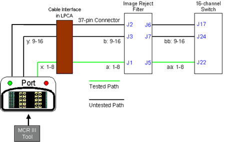
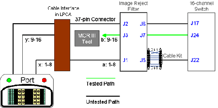

Proprietary to General Electric Company
Direction 5440000, Rev# 5
Signa HDxt Service Methods
Module Version 4.0, Version Date 11/17/08
Proprietary to General Electric Company |
| Required Persons | Preliminary Reqs | Procedure | Finalization |
|---|---|---|---|
| 1 | Not Applicable | Not Applicable | Not Applicable |
The MCR 3 Tool and Diagnostic will work for forward production HDx systems only. Use the MCR 2 Tool procedure for HDx upgrades.
| ||||
| Strong Magnetic Field. | ||||
| Ferrous materials can become dangerous projectiles in the presence of the magnetic field Produced by the Signa Magnet. | ||||
| Do not Bring any ferromagnetic tools or equipment into the magnet room. |
If errors are found after running the default tests (MCR 3 Tool), refer to Table 1 to determine a response.
Table 1: Default Test Troubleshooting
| Status | Response |
| • Preamp Status (OFF) | This test bypasses the Preamps in the Multicoil Interface Box (MIB). |
| • Excess Noise (OFF) | This test bypasses the Preamps in the MIB. |
| • Dead Channel (OFF) | If Dead Channel (ON) validation for the same channel Passed, replace MIB. |
| If Dead Channel (ON) validation for the same channel also Failed, see Isolating Port A Failures for fault isolation procedures. | |
| • Low Signal (OFF) | Run 16-Channel Switch OSC test. |
| • Channel-Channel Variance (OFF) | Review validation results. (See Note below.) |
| • Preamp Failed (ON) | Replace Preamp Board or MIB. |
| • Excess Noise (ON) | Replace Preamp Board or MIB. |
| • Dead Channel (ON) | If Dead Channel (OFF) validation for the same channel Passed, replace Preamp or MIB. |
| If Dead Channel (OFF) validation for the same channel also Failed, refer to Isolating Port A Failures for fault isolation procedures. | |
| • Low Signal (ON) | Run 16-Channel Switch OSC Test. |
| • Channel-Channel Variance (ON) | Review validation results. (See Note below.) |
| Run port-specific test for Port B. (See Using Port-Specific Tests to Isolate Port B & C Failures.) | |
| Run port-specific test for Port C. (See Using Port-Specific Tests to Isolate Port B & C Failures.) | |
| NOTE: | Channel to Channel Variance Failure: This test fails when channel values are not within set tolerances. Because tolerances are fairly loose, there is no way to objectively isolate the failure point/cause. In order to determine which channel may be problematic, view the channel output values in the test results and look for a value whose variance is dissimilar to the others. |
Port A Dead Channel Failure: If the ON and OFF versions of the Dead Channel tests of any singular channel have opposite results [for example, the Dead Channel (OFF) test for Channel 2 fails, but the Dead Channel (ON) test for Channel 2 passes], the affected Preamp should be swapped or the MIB should be replaced. If the Dead Channel tests for ON and OFF both failed, perform the following:
On the back of the MIB (shown in Illustration 1), identify the cables from the channel that failed the Dead Channel test and the cable from any channel that passed the Dead Channel test.
Illustration 1: MIB Rear Location

On the upper level, swap the passing channel with the failing channel (shown inIllustration 2), and re-run the Port A test.
Illustration 2: MIB Channels 1-8 In (J1-8, Orange)

If the problem moved to previously passing channel, replace the cable segment between Port A and the MIB, and return cables to their original positions.
If the problem remains on the same channel, return cables to their original positions and proceed to Step 3.
On the lower level, swap the passing channel with the failing channel (shown in Illustration 3), and re-run the Port A test.
Illustration 3: MIB Channels 1-8 Out (J9-16, Blue)

If the problem moved to the previously passing channel, replace the cable segment between the MIB and the 16-Channel Switch, and return cables to their original positions.
If the problem remains on the same channel, return cables to their original positions. Swap the MIB Preamp Board and repeat the test. Replace the Preamp Board or MIB.
If needed, the Cable Test Kit can be used to isolate failures to either the cables in the cable track or the 16-Channel Switch. (See Illustration 4.)
Illustration 4: Port A Isolation

The port-specific tests will automatically run all the individual tests available in that port. Between each test, when prompted to change the positions of cables that run from the 16-Channel Switch to the Cable Interface in the LPCA, make the changes as instructed. After each test, the option to skip the remaining tests displays.
Plug the MCR Tool into either B or C Port.
Select the group of tests to be run, and click [Run].
Hypertronics Test (Ports B & C): This test diagnoses the MCR chain path of channels 1-16 (or 17-32 on Port C) between the Coil (MCR Tool) and the 16-Channel Switch.
Illustration 5: Hypertronics Test

Click [Run] to start this test. All cables should remain in their original locations. Once this test is complete, proceed to the Hypertronics Cable Swap Test. Note the results, make the cable changes as instructed, and proceed.
| NOTE: | If this test passes, the MCR 3 Tool automatically skips the 8W8 Bottom Test. Either terminate MCR 3 Diagnostics or test another port. |
Hypertronics Cable Swap Test (Ports B & C): This test diagnoses the MCR chain path of channels 1-8 (17-24 on Port C) between the Coil (MCR Tool) and the Cable Interface in LPCA and channels 9-16 (25-32 on Port C) between the Cable Interface in the LPCA and the 16-Channel Switch. Leave the 37 pin connector on the Cable Interface, as it provides power to MCR 3 Tool.
| NOTE: | This test will not run on 8-channel systems. |
Illustration 6: Hypertronics Cable Swap Test

Once the system is ready to perform this test, instructions display to swap the two lower cables on the Cable Interface in the LPCA. (See Illustration 6 Step and Illustration 7.) Once this test is complete, proceed to the 8W8 Bottom Test. Note the results, make the cable changes as instructed, and proceed. If failures do not change, the problem is beyond the cables in the cable track. Leave the 37 pin connector on Cable Interface as it provides power to the MCR Tool.
Illustration 7: Location of Cable Swapping

| NOTE: | If this test passes, the MCR 3 Tool automatically skips the 8W8 Top Test. |
8W8 Bottom Test (Ports B & C): This test diagnoses the MCR chain path of channels 1-8 (17-24 on Port C) from the Cable Interface in LPCA, though the Image Reject Filter, and to the 16-Channel Switch.
Illustration 8: 8W8 Bottom Test

Once the system is ready to perform this test, instructions display to take the bottom 8-Channel Connector off the Cable Interface in the LPCA and connect it directly to the MCR Tool. (See Step Illustration 9.) Leave the 37 pin connector on Cable Interface as it provides power to MCR Tool. Once this test is complete, proceed to the 8W8 Top Test. Note the results, make the cable changes as instructed, and proceed. If failures do not change, problem is beyond cable track.
Illustration 9: MCR Tool Connect Location for 8W8 Cable

8W8 Top Test (Ports B & C): This test diagnosis the MCR chain path of channels 9-16 (25-32 on Port C) from the Cable Interface in the LPCA, through the Image Reject Filter, to the 16-Channel Switch.
Illustration 10: 8W8 Top Test

To perform this test, take the top 8-Channel Connector off the Cable Interface in the LPCA and connect it to the MCR Tool. Leave the 37 pin connector on Cable Interface as it provides power to MCR Tool. Once this test is complete, note the results and install the cables in their original position.
If failures did not change, the problem is beyond the cable track. Potential defective components are: Cable Track Cables, Image Reject Filter, cables between Image Reject Filter, and 16-Channel Switch. Cables can be moved to isolate failed component. Individual cables can be swapped to isolate failed component by using the Cable Test Kit. A failed channel can be swapped with a passing channel shown in Illustration 11. (See Illustration 12 for the Image Reject Filter and Illustration 13 for the 16-Channel Switch.)
Illustration 11: Receive Chain Fault Isolation

Illustration 12: Image Reject Filter Location

Illustration 13: 16-Channel Switch

No finalization steps.